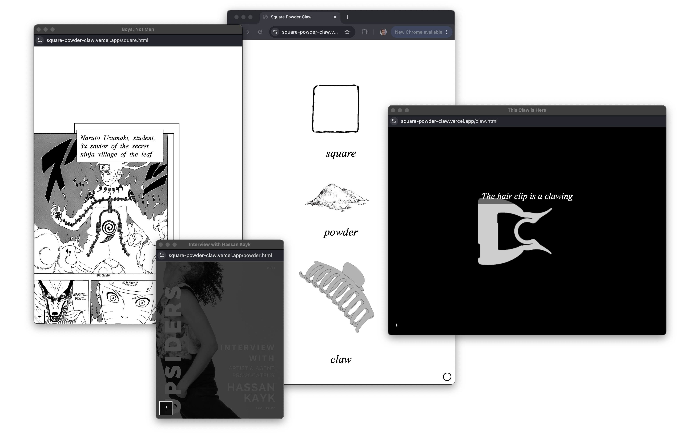

Square, Powder, Claw

Square, Powder, Claw is a triptych on boyhood. Three objects, three rituals, three versions of a body trying to grow up. The square is the panel, the manga grid, the closed circuit of boys not men. The powder is a proxy for the father, the consciousness change as a way to find fatherhood, the bulk dragged into the gallery in hopes that a temple will form. The claw is my version of masculinity, so simple that it just means I don’t let my hair down and I don’t have short hair either.
The piece grew out of an archaeological impulse. I was excavating the remnants of a boyhood shaped by absence, by inheritance, by the specific textures of manga protagonists learning to metabolise their own rage. The title itself carries contradiction. Something rigid. Something transient. Something sharp. Boyhood isn’t linear, it’s sprawling, and its myths of strength, of fathers, of survival form a kind of closed circuit that resists interruption. I wanted to intervene. I wanted to let the cracks in that circuit widen, to see what escapes through them.
The powder panel takes the shape of a portrait of the artist as a young man, on creatine, on caffeine anhydrous, on glutamine. During my imagined exhibition at the Serpentine, I set up a gym in the gallery and worked out every day in front of visitors. My practice involves becoming the human rat, the circus freak, the zoo animal. I put on display that which goes into our attempt to infiltrate community, to press our connection with the weight of our bodies, the size of our thoughts, to lock in belonging. My obliques are the art. My lats the Mona Lisa.
I performed it at tiat (the intersection of art & technology), the salon series that gathers at the Internet Archive on Funston. tiat feels like a hidden circuit board beneath the city, charged, interconnected, flickering with a quiet volatile intelligence. The room has a habit of recalibrating the work in real time. Last night the conversation wasn’t just with the audience, it was with the piece itself, certain phrases landing like a held breath, others slipping past. The cracks I wanted to widen widened.